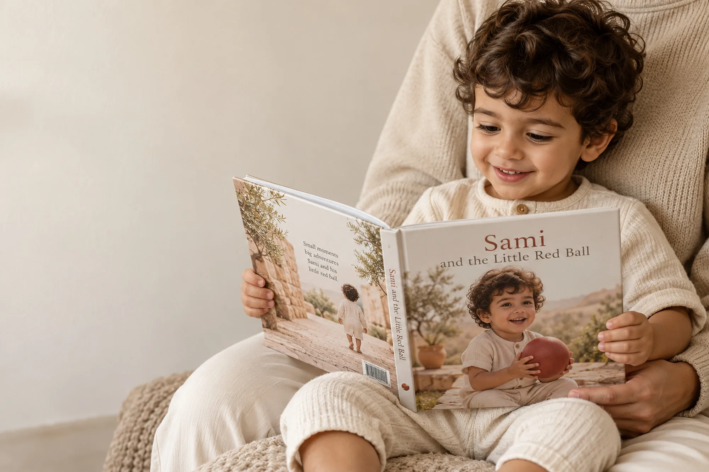

Arabic stories for kids: 8 ways to help your child love reading in Arabic
Many families in the UAE and the Gulf speak Arabic at home, yet children often reach for English books first. The good news is that a love of Arabic reading grows from small, warm habits rather than lessons. Here are eight ideas that work at home, even on busy days.
1. Read aloud together every day
Ten minutes is enough. Hearing Arabic read with expression, with voices for each character, builds vocabulary and makes the language feel alive. Let them turn the pages and point at the pictures.
2. Choose stories where they are the hero
Children pay closer attention when the story is about them. A personalised Arabic book with their name written in Arabic and their illustrated face on every page turns reading into something they ask for. Every Hikaya story comes in an Arabic edition with its own cover, and it opens from right to left like any Arabic book. Browse the stories.
3. Mix Fusha and your home dialect
Most children's books are written in Fusha (Modern Standard Arabic), while children speak a dialect at home. That is fine. Read the text as written, then chat about the pictures in your own dialect. Children quickly learn that both belong to them.
4. Make Arabic the bedtime language
A short Arabic story at bedtime becomes a ritual they look forward to. Calm stories work best, like Teddy's Night Adventure (ages 2–6), a cosy tale about feeling brave in the dark.
5. Let them see you read in Arabic
Children copy what they see. A newspaper, a novel or Quran reading in front of them shows that Arabic reading is part of everyday life, not just homework.
6. Play with letters, starting with their name
Magnetic letters, letter cards or tracing in sand make Arabic letters feel like a game. Start with the letters of their own name. Seeing that name printed on the cover of their own book makes it even more exciting.
7. Keep Arabic and English books side by side
Bilingual children do not need to choose. Keep both on the same shelf at their eye level, so Arabic books are never hidden away. Some families even choose the same story in both languages so children can compare.
8. Visit libraries and book fairs
Public libraries and book fairs, such as the Sharjah International Book Fair, are full of Arabic picture books. Let your child pick one book on their own. Choosing makes reading feel like theirs.
Tip: ordering an Arabic Hikaya book
Choose Arabic as the book language when you personalise. The child's name and your first-page message are then written in Arabic too, so the whole book reads naturally. Each book is made to order and delivered in about 5 working days in the UAE (free) and about 7 in the rest of the GCC.